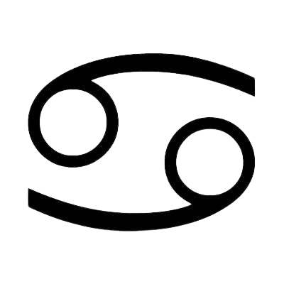

SIGNO CANCÊR

Características
Sensível e carinhoso.
Protetor e emocional.
Propenso a mudanças de humor.
Elemento - água
A água em Câncer representa a sensibilidade, a intuição e a ligação emocional profunda. É a compaixão e o amor pelo lar e pela família.
Satélite regente
A Lua está ligada às emoções, à intuição e à sensibilidade. Ela simboliza a conexão com o passado, a maternidade e a segurança emocional.